Nyzo version 490 (commit on GitHub) adds parallelization to the sentinel data retrieval process.
This version updates the sentinel. It does not affect the verifier.
In the original sentinel, fetching of data from managed verifiers was fully serial. If several consecutive verifiers became disabled simultaneously, the sentinel might fail to protect its managed verifiers. In this version of the sentinel, all managed verifiers should be protected as long as one managed verifier and one sentinel are functioning properly.
In an inconsequential change, the error message displayed when one attempts to freeze a block behind the frozen edge was updated. The new error message better reflects the actual behavior of the method.
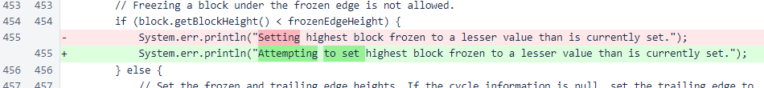Also in the category of inconsequential maintenance, printing of the top-new-verifiers list was removed. This does not change any behavior, but it does remove clutter from the log file.
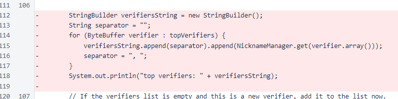The important changes all happened in the Sentinel class. The mesh update interval was lengthened from 20 seconds to 5 minutes, as the mesh updates are now performed fully in parallel across all managed verifiers, and 5 minutes is a reasonable update interval for each verifier. Also, a minimum-loop-interval constant was added to replace the literal used in the loop in the previous version.
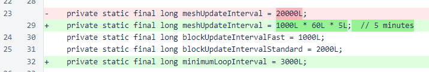The blockTransmitDelay constant was given a more appropriate name of blockCreationDelay and reduced by 10 seconds, and a new constant was added for an actual transmission delay relative to the calculated vote timestamp.

The variables for tracking consecutive successful block fetches and fast-fetch mode were changed from single values to maps to track each thread/verifier independently. The ConcurrentHashMap class is the appropriate type of map to use when the map will be accessed from multiple threads, and this class will be replacing HashMap in much of the existing code.
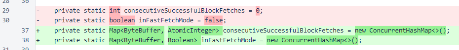The mesh-update index and block-update index were used to track position in the old serial process, so they were removed. Variables to track the number of blocks received and frozen were added to track efficiency with respect to redundant requests in the new parallel process.
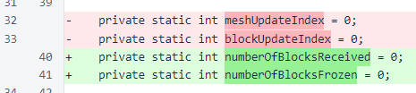The lastMeshUpdateTimestamp and lastBlockUpdateTimestamp variables have been moved to local variables in each thread, and lastBlockReceivedTimestamp has been changed to AtomicLong to improve thread safety, as long does not offer atomic reads and writes in Java.
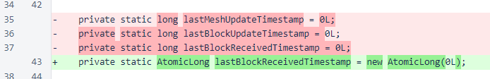The list of verifiers has been removed, as access by index is no longer necessary, and the map has been renamed because the distinction between the list and map is also no longer necessary. Classes have been changed to concurrent versions to improve thread safety, and a variable for storing the frozen edge has also been added to improve thread safety. Reference variable reads and writes are atomic in Java, so storing a frozen edge in this class provides more predictable behavior than requesting the frozen edge height from the BlockManager class and then requesting the frozen block at that height. Lastly in the class variable declarations, an unused Random instance was removed.
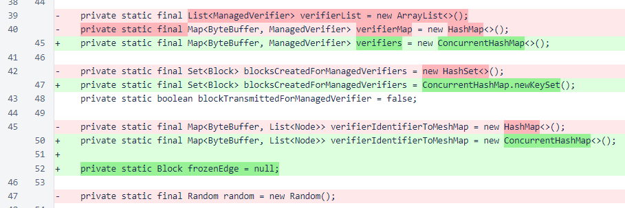The first significant behavior change is in fetching and processing of bootstrap responses. Instead of fetching a single response, all managed verifiers are queried, and the maximum height retrieved is used. This is still not a democratic consensus process like the verifier's use of the trusted entry points. In this case, data from a single verifier is still used without question, but querying of all verifiers reduces the potential for problems caused by a single managed verifier having tracking issues when the sentinel initializes. See the implementations of these methods for details on the process.
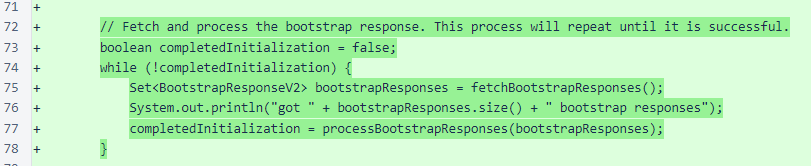The second significant behavior change is the creation of a separate thread for each managed verifier. The query slot is used to provide pseudo-serial behavior to eliminate unnecessary parallel traffic when the sentinel is certain that is close to the actual frozen edge of the blockchain.
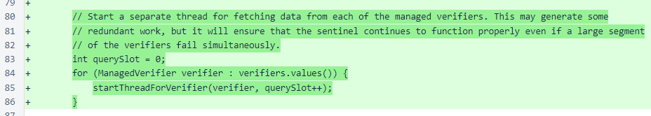There is still only a single thread for block creation and transmission, though this thread is separate from all the managed-verifier threads. So, even if all but one of the managed-verifier threads are stuck, the sentinel will still be able to function correctly. One functioning managed-verifier thread will be able to get data in a timely manner, and the independent block thread will be able to create blocks and broadcast them to the mesh. The block of code that writes the CSV file was for debugging, should not have been pushed to the public repository, and will be removed soon.
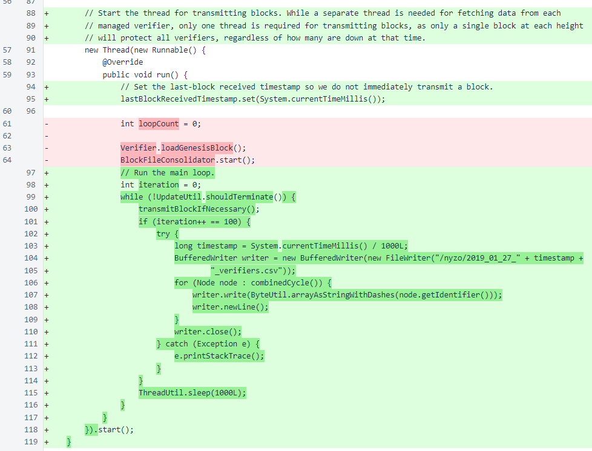Each managed-verifier thread waits for the message queue to clear at the beginning of the loop. This is a pattern that is used in several places in the Nyzo code. Despite the apparent simplicity of this method call, it should be used with care. In this case, the threads that will be adding messages to the message queue are the managed-verifier threads and the block-transmission thread. The managed-verifier threads are all performing this wait, which means that none of them will monopolize the queue. The block-transmission queue is not performing this wait, but that is preferable behavior, as that thread should have priority, and it should be broadcasting blocks relatively infrequently.
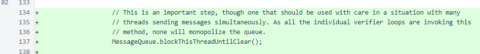A final piece of code worth examining is the condition that attempts to provide a pseudo-serial querying of managed verifiers when the sentinel is tracking the frozen edge closely but allows for fast switching to full-parallel mode. This is a seamless switch, and the modes can alternate between iterations without any overhead.
The first part of the condition, using lastBlockRequestedTimestamp, imposes a minimum (brief) interval between queries for this thread. The second part of the condition looks at the current timestamp, divides the time into equal-length time slots for all verifiers, and only queries in this verifier's assigned time slot if the sentinel is, without question, closely tracking the frozen edge of the blockchain. The verification timestamp is a certain check on closeness to the frozen edge of the blockchain, as a minimum interval on verification timestamps is imposed by verifiers. If there is any question about whether the sentinel is tracking the frozen edge closely, all threads perform queries, regardless of their assigned time slots. The verifier has been tested to run properly 100% of the time in full-parallel mode, so failure due to the added stress of this mode is not a concern. The pseudo-serial behavior is simply meant as a resource conservation measure to reduce the average bandwidth and CPU usage of verifiers and the sentinel during normal usage.
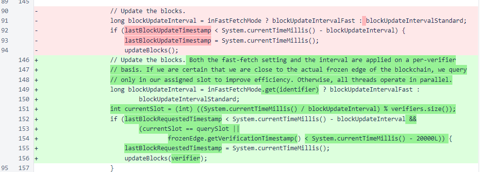